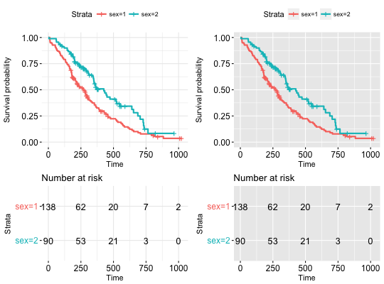

Arranging multiple ggsurvplots on the same page.
arrange_ggsurvplots(x, print = TRUE, title = NA, ncol = 2, nrow = 1, surv.plot.height = NULL, risk.table.height = NULL, ncensor.plot.height = NULL, ...)
1-risk.table.height -
ncensor.plot.height when risk.table = TRUE and ncensor.plot =
TRUEncensor.plot = TRUE.returns an invisible object of class arrangelist (see marrangeGrob), which can be saved into a pdf file using the function ggsave.
# Fit survival curves require("survival") fit<- survfit(Surv(time, status) ~ sex, data = lung) # List of ggsurvplots require("survminer") splots <- list() splots[[1]] <- ggsurvplot(fit, data = lung, risk.table = TRUE, ggtheme = theme_minimal()) splots[[2]] <- ggsurvplot(fit, data = lung, risk.table = TRUE, ggtheme = theme_grey()) # Arrange multiple ggsurvplots and print the output arrange_ggsurvplots(splots, print = TRUE, ncol = 2, nrow = 1, risk.table.height = 0.4) ## Not run: ------------------------------------ # # Arrange and save into pdf file # res <- arrange_ggsurvplots(splots, print = FALSE) # ggsave("myfile.pdf", res) ## ---------------------------------------------